$$qf_commondoc_header.start$$ $$qf_commondoc_header.end$$
$$startbox_note$$
Example dataset and projects can be found in the directory $$plugin_info:examplesdir:fcs_maxent$$.
This tutorial explains how to use the Maximum Entropy Plugin for QuickFit.
This is done by providing a step by step instruction for FCS example data.
It might be helpful to read the help and tutorial of the FCS fit plugin as well to
get the basic idea of how data evaluation in QuickFit works.
$$endbox$$
Preparing the Project
- Load FCS-datasets into the project. For this tutorial, you should create a new project and then add the following ALV-5000 files from the directory $$plugin_info:examplesdir:fcs_maxent$$:
- $$plugin_info:examplesdir:fcs_maxent$$/testdata/al488_20nM_3.ASC (only ALexa-488)
- $$plugin_info:examplesdir:fcs_maxent$$/testdata/DNA_2nM_Al488_0ul_1.ASC (only DNA)
- $$plugin_info:examplesdir:fcs_maxent$$/testdata/DNA_2nM_Al488_5ul_1.ASC (DNA-ALexa-488 mixture)
- $$plugin_info:examplesdir:fcs_maxent$$/testdata/DNA_2nM_Al488_10ul_1.ASC (DNA-ALexa-488 mixture)
These files represent measurements of aqueous solutions of Alexa-488, of an Alexa-488-labeled dsDNA and of mixtures of Alexa-488 and the DNA in different proportions.
You can load these files into the project with the mainwindow menu entry Data Items | Insert Raw Data | FCS/DLS | Open FCS/DLS Data from File:
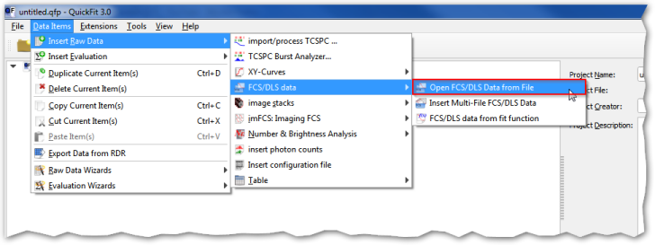
- Now we will have to add the evaluation item to the project. This is done in the mainwindow menu Data Items | Insert Evaluations | FCS: MaxEnt.
- The project will now look as follows:
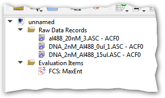
- In some cases it might be required to clean the data in the input files. How to do this is described in the tutorial of the plugin FCS Curve Fitting.
MaxEnt Evaluation
Basic MaxEnt Fitting
- Now open the MaxEnt evaluation editor by double-clicking the entry "FCS: MaxEnt" in the project. The window looks as follows:
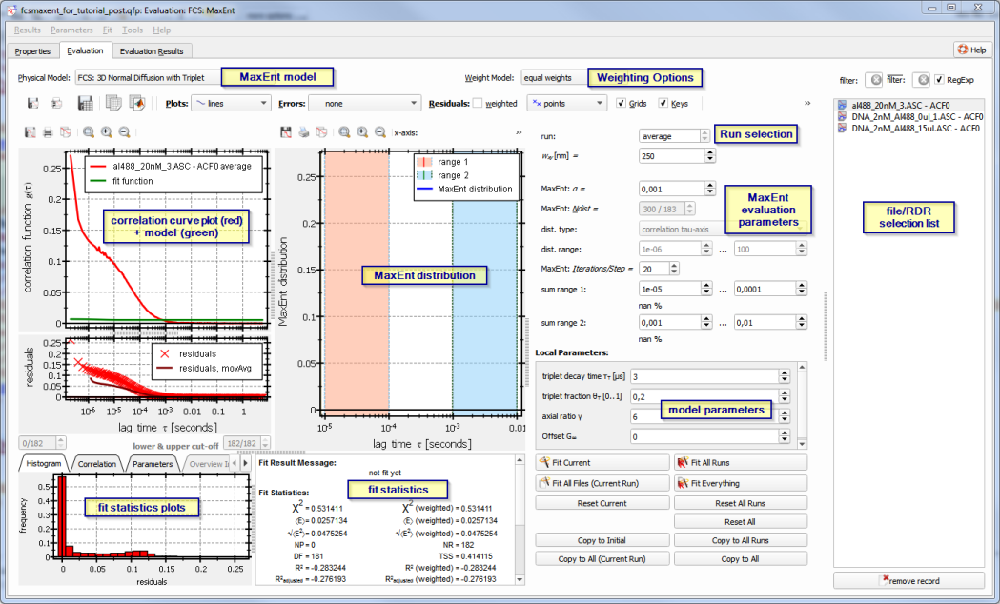
On the rhs of this dialog you can select one of the files/RDRs in the project. On the lhs you see a plot of the ACF-curve (red) and the model derived from the MaxEnt distribution (green) together with the residuals and in a second plot the actual MaxEnt distribution. Below these plots you will find several fit statsitics.
- First cut any non-needed lag-time channels from the data, e.g. to exclude detector afterpulsing in the first few channels, or long ranges with $(g(\tau)\approx0)$ for large lag times.
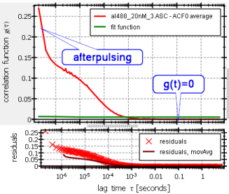
This can be done with the lower & uppper cut-off widgets below the ACF-plot:
If these are deactivated, you can click on the button Reset Current to actiavte them. For the first file (al488_20nM...ASC), you should cut them so the data looks as follows:
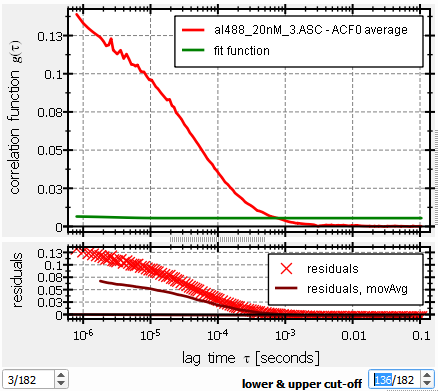
- Now we have to select a MaxEnt model at the top of the window (for this tutorial choose FCS: 3D Normal Diffusion with Triplet) and set the model parameters at the (bottom-)right. This model supports a triplet-component, which is removed form the model before the MaxEnt analysis is performed. A simple FCS Curve Fit and a focal volume calibration has revealed the following parameters for this measurement: $[ w_{xy}\approx282\mathrm{nm},\ \ \ \ \ \gamma=6,\ \ \ \ \ \tau_{trip}\approx2\mathrm{{\mu}s},\ \ \ \ \ \theta_{trip}\approx0.2 ]$
Set these parameters in the MaxEnt dialog:

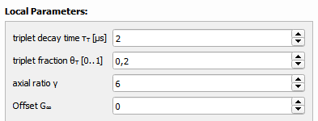
- Now we start the MaxEnt evaluation istelf. First set the Maxent-α parameter to $(\alpha=0.1)$, which is a rather large value and will lead to broad distributions.
Finally click several times on
 until the MaxEnt distribution does not change any more. You should get a distribution like this:
until the MaxEnt distribution does not change any more. You should get a distribution like this:
 It is plotted as a function of the correlation time $(\tau_D)$. In some cases it might be more convenient to plot it as a function of the diffusion coefficient $(D=w_{xy}^2/(4\tau_D)})$ instead. This can be done by selecting the x-axis aboive the distribution plot:
It is plotted as a function of the correlation time $(\tau_D)$. In some cases it might be more convenient to plot it as a function of the diffusion coefficient $(D=w_{xy}^2/(4\tau_D)})$ instead. This can be done by selecting the x-axis aboive the distribution plot:
 Both plots contain blue and red ranges that can be defined on the rhs of the window:
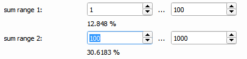
The plugin integrates the MaxEnt-distribution over these two ranges and outputs the fraction of particles in these ranges (here 13% and 31%). This feature helps to quickly quantify mixtures, of the components are easily separable.
Both plots contain blue and red ranges that can be defined on the rhs of the window:
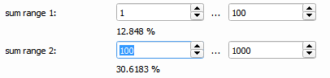
The plugin integrates the MaxEnt-distribution over these two ranges and outputs the fraction of particles in these ranges (here 13% and 31%). This feature helps to quickly quantify mixtures, of the components are easily separable.
Improvement of the fit Results
As seen in the last step, the distributions are still relatively broad, because we chose a large value $(\alpha=0.1)$. This is also seen in a relatively bad fit to the ACF:
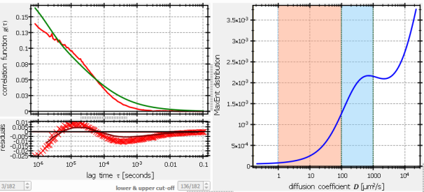
Now we will refine this evaluation, by step-wise reducing the value of $(\alpha)$. To do so, set $(\alpha=0.01)$ and click on Fit Curerent. The result should look as follows:
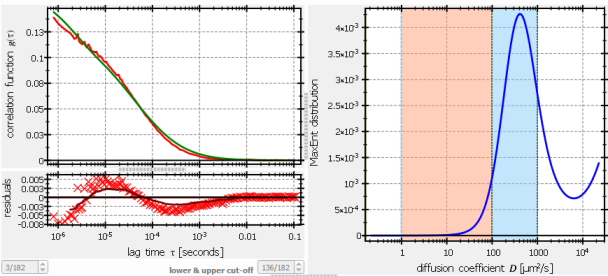
The fit is already significantly better and the peak is narrower. However the position of the major peak is still around 400μm2/s, which is expected for this dye ($(D_{20,W}\approx 407\mathrm{{\mu}m^2/s})$. If you set $(\alpha=0.001)$ and repeat the fit, the results will further improve:
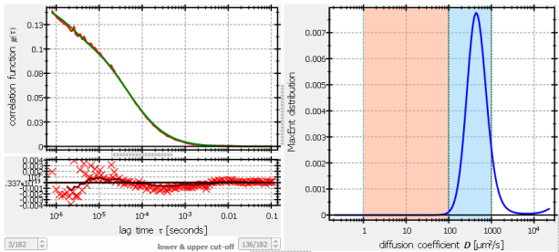
This seems to be an ideal $(\alpha)$ for this dataset (the best value for $(\alpha)$ depends on the dataset, as the residuals are not normalized during the fit). If you further decrease the value to e.g. $(\alpha=10^{-5})$ the fit will get unstable and eventually fail. So we stick to $(\alpha=0.001)$. But note that you'll have to find a good $(\alpha)$ for every new dataset or group of datasets.
$$note:If the fit fails, you have to click on Reset Current before running a new fit with new parameters, as every click on Fit Current bases its fit on the previously obtained distribution!$$
Fitting the other files
Now repeat the steps above for the other files in the project. The setting of $(\alpha=0.001)$ will give good results for all files, but since the data is different, you should set the cut to:
 The expected curves are these:
The expected curves are these:
- DNA_2nM_Al488_0ul_1.ASC - ACF0
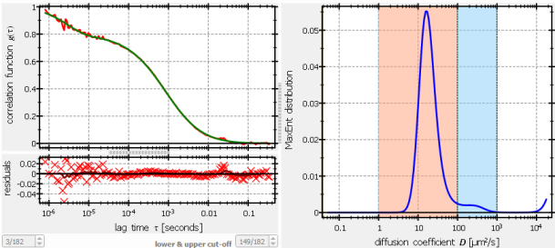
- DNA_2nM_Al488_5ul_1.ASC - ACF0

- DNA_2nM_Al488_10ul_1.ASC - ACF0
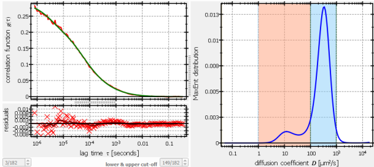
As you can see, all distributions show two peaks, one at a low diffusion coefficient around 10μm2/s and one at 400μm2/s. These correspond to the diffusion coefficient of the DNA and of Alexa-488, but the distributions show different abundances of the two. From the given ranges, one gets these fractions (see above):
| file |
slow fraction (DNA) |
fast fraction (Alexa-488) |
| DNA_2nM_Al488_0ul_1.ASC - ACF0 |
94% |
4% |
| DNA_2nM_Al488_5ul_1.ASC - ACF0 |
23% |
72% |
| DNA_2nM_Al488_10ul_1.ASC - ACF0 |
16% |
83% |
Data Interpretation
These data also show that the fraction of ALexa-48 increases and the fraction if the DNA decreases. However these fractions are not always easy to interpret: The first file DNA_2nM_Al488_0ul_1.ASC - ACF0 did not contain any Alexa-488, so the 4% fast fraction cannot be explained by that. What we see here is most probably internal DNA dynamics, which is also visible in the FCS-autocorrelation curves. Therefore they also appear in the MaxEnt evaluation as an additional peak. the second file DNA_2nM_Al488_5ul_1.ASC - ACF0 shows a small increase at large diffusion coefficients $(D>10^4\mathrm{{\mu}m^2/s})$. This is a remnant of imperfect correction of the triplet contribution. You can improve this by performing a simple FCS-fit and trying to obtain better estimates for $(\theta_{trip}, \tau_{trip})$.
Overlay Plots
You can also use the overlay tool to plot several MaxEnt-distributions in a single plot and compare them. In brief:
- click on the menu entry
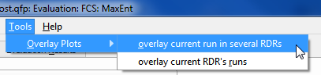
- select the files/RDRs you want to overlay (keep the CTRL-key pressed while clicking the files in the list with the mouse) and choose the desired plot. FInally click on OK.
- For a "MaxEnt D-distribution" plot you should get a new window with this plot:
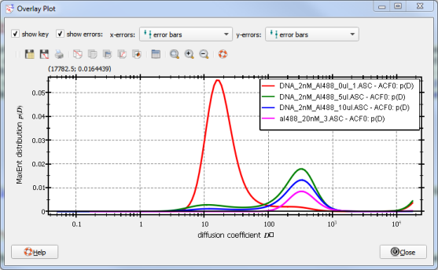
- If you want to keep this plot, you can right-click on the plot and choose "Copy Plot Data to Table RDR" from the context-menu. You will then get a dialog which allows to store the plot (and data) into a new table RDR in the project.
Fitting the MaxEnt distributions
You can fit some model functions (e.g. log-normal distributions) to the MaxEnt dristribution. To do so, follow these instructions:
- Close the MaxEnt editor and add a new Histogram Curve-Fit by clicking the following menu entry in the main window:
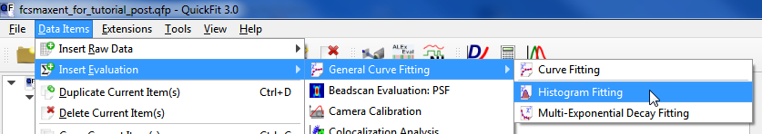
You will get a new Evaluation Item "Histogram Fit" in the project.
- Open the Fit editor by double-clicking the new entry:
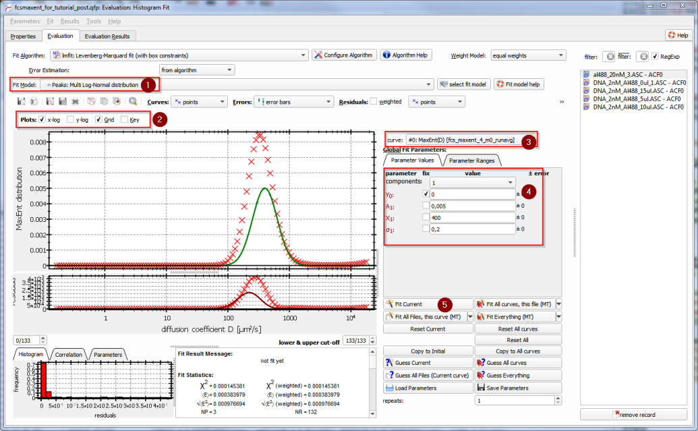
On the rhs you can select one of the RDRs in the project. The dialog then shows the data from the RDR. With the combobox (3) you can select the different distributions (either as a function of $(\tau_D)$ or of $(D)$). For this tutorial slect "MaxEnt(D)" which is the distributiona s a function of $(D)$.
- Now select an appropriate fitting model (1). For this tutorial, a log-normal distribution $$fitfunction:name:gen_multilognormal$$ is a good choice. Also set the plot to have a logarithmic x-axis by clicking the checkbox (2).
- Finally set the initial parameters for the fit in (4) and perform the fit with the button "Fit Current" (5). The result should look as folows:
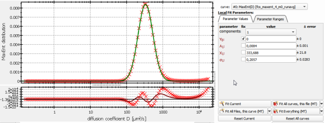
- For the other files you'll need two components in the fit model, as there are also two components in the distribution:
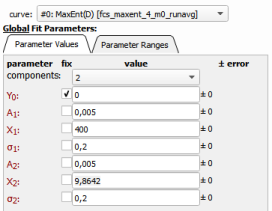
If the first fit for one of the two-peak distributions is done, you can use this result as starting values for the next fits by clicking Copy to Initial before selcting the next file and running the fit there with Fit Current.